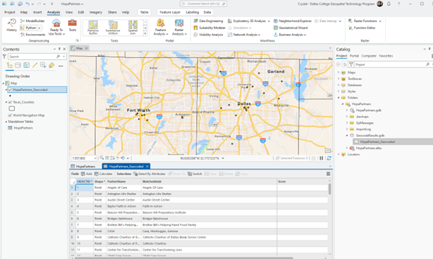
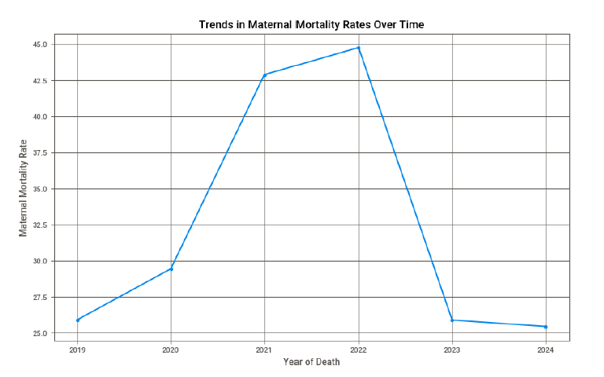
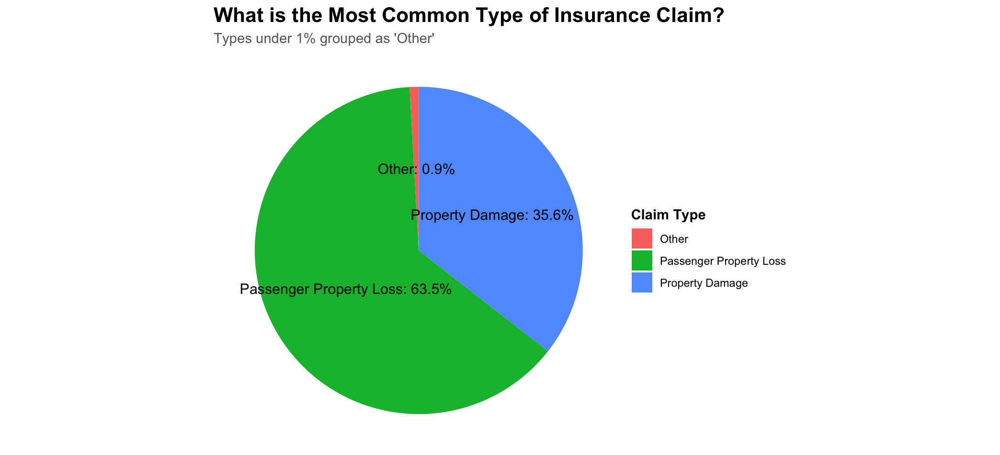
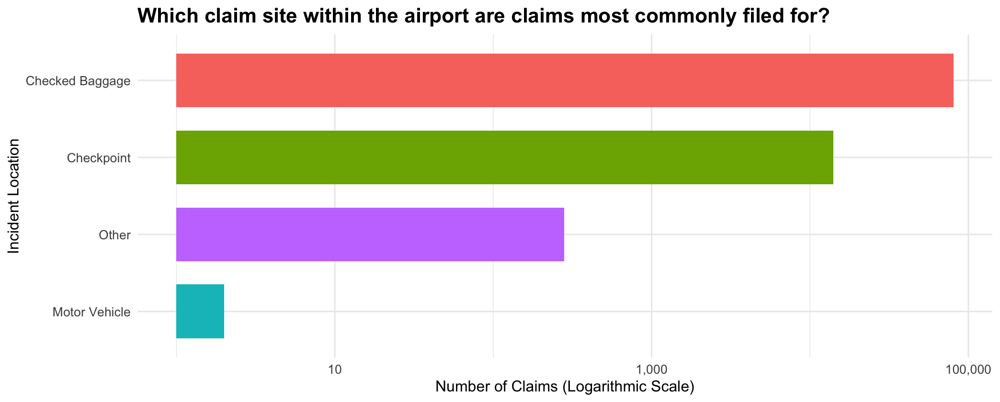
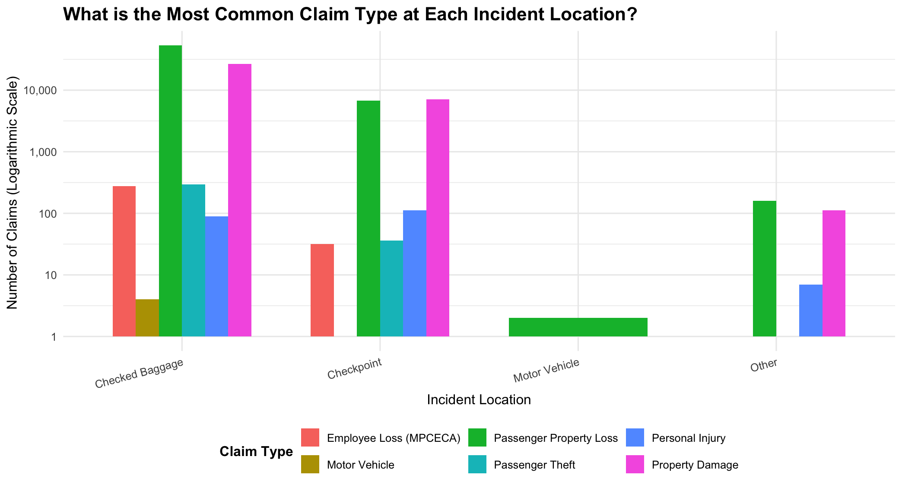
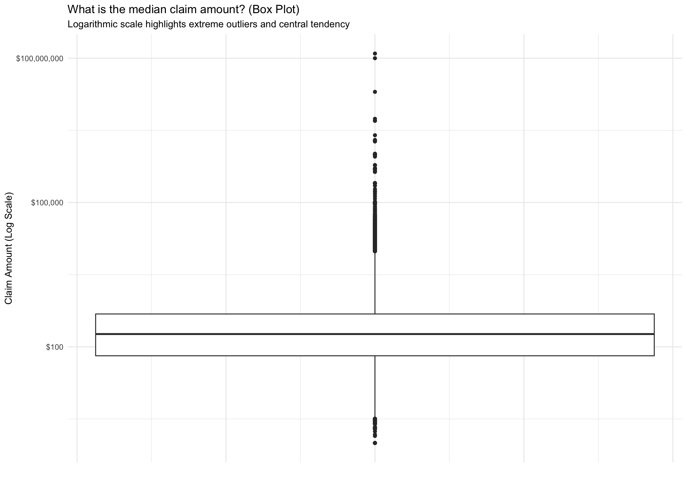
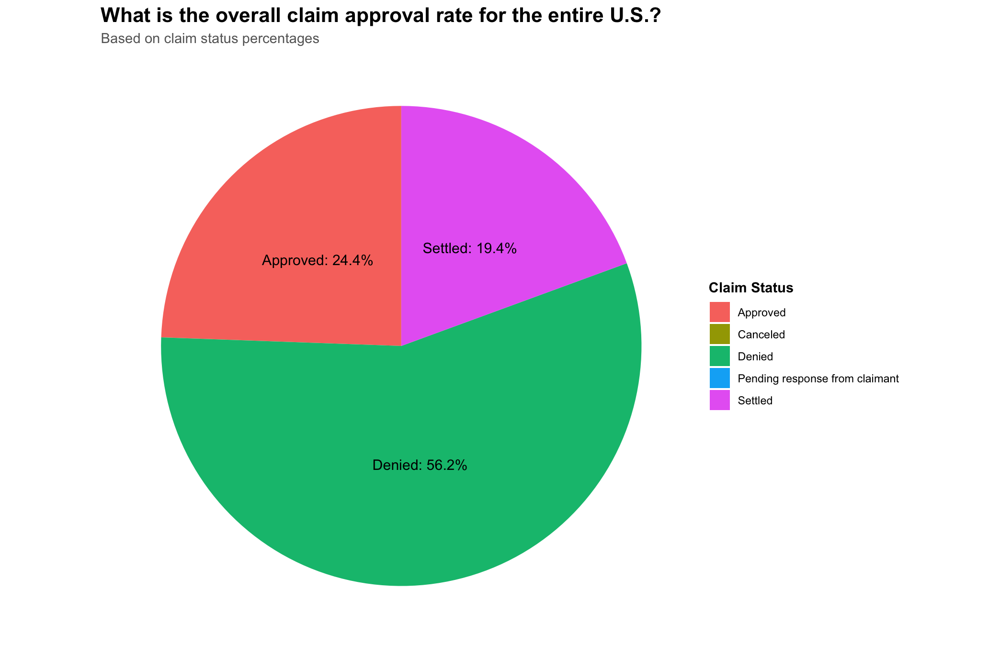

Featured Projects

Automated Script Geocoding List of Locations
This Python automation script reads a CSV list of Hope Supply Co.’s partner organizations, which originally lacked full addresses. Instead of manually searching for each location, I automated the process using ArcGIS’s geocoding APIs to convert names into spatial coordinates. Developed during GIS Programming (GISC 2335), this project demonstrated how geospatial scripting can drastically streamline data preparation for mapping.
Lesson learned: how to automate geocoding workflows using Python and external APIs to efficiently transform incomplete real-world datasets into usable GIS layers.

Maternal Mortality Analysis
This Jupyter notebook attempts to predict maternal mortality outcomes using machine learning models built with AutoGluon. While the project contains early mistakes and areas for improvement, it represents a meaningful effort to apply techniques learned in Python Data Science (ITSE 2371) to real-world health data explored in Personal/Community Health (PHED 1304).
Read the full research paper (PDF)
Lesson learned: how to bridge public health and data science concepts, and the importance of iteration, data quality, and thoughtful modeling in addressing critical health disparities.TSA Airport Case Study





This project explored TSA claims data across U.S. airports using R for data cleaning, analysis, and visualization. The goal was to identify trends in claim types, processing times, and approval rates based on airport and incident location.
Lesson learned: how to manipulate real-world datasets in R, create meaningful visualizations, and extract insights from messy public data to inform system-level improvements.
Storage Analysis Automation Script
I developed this Python script while contracting for Southern Methodist University (SMU)'s Photo/Video Department. It analyzed media storage usage by scanning file directories, calculating storage totals, and exporting the results to Excel for reporting.
Lesson learned: how to automate file system analysis and generate actionable data summaries for digital asset management.
Batch Rename Automation Script
I developed this tool to batch-rename video files and generate an Excel shot list with both original and new filenames and time lengths. Used at SMU Photo/Video Department to improve post-production workflow.
Lesson learned: how to manipulate file names, structure data for spreadsheets, and enhance productivity with Python automation.